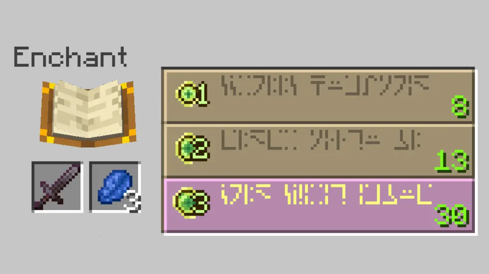
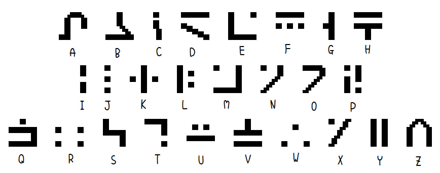

The Enchantment Language: More Than Just Random Symbols
Minecraft is one of the most popular and creative games in the world — a digital sandbox where players build, explore, and survive. But hidden within its blocky, pixelated universe is something unexpected: an artificial language.
When players use the enchanting table, mysterious runes appear. At first glance, these symbols look like nonsense — just a visual effect to create a sense of magic. But here’s the twist: it’s not just random. It’s a real, readable writing system called the Standard Galactic Alphabet (SGA).
The Standard Galactic Alphabet, or SGA, is a fictional script originally created for the 1990s video game Commander Keen, developed by id Software. In that game, it was used to represent alien writing across signs and terminals — adding a fun, cryptic layer to the sci-fi world.
What makes SGA interesting is that it's not just decorative. It’s a substitution cipher, where each symbol corresponds directly to a letter in the English alphabet. That means, with a little practice, you can read and write English words using SGA. It’s like a secret code — one that’s simple enough to learn, but mysterious enough to feel alien or magical.
Later, when Mojang developed Minecraft, they borrowed this exact script to use in the enchanting table interface, where it appears as the text floating around the book. While the words don’t always match the enchantment effects, they’re still real, readable phrases written in SGA. This little detail adds a touch of lore and mystery to the game, sparking curiosity in millions of players.
Today, the SGA has become a kind of cultural relic among gamers and language enthusiasts. You’ll find fonts, charts, and online tools that help you write your own messages using this script. It’s a perfect example of how a simple, made-up alphabet can grow into something meaningful and widely recognized — just by being cleverly placed in popular games.
However, even when translated, back to the topic of the enchantments in Minecraft, often words have nothing to do with the actual item or effect. The words are pulled from a list of fantasy-sounding phrases like “Chanted,” “Glimmer,” or “Eldritch.” This design choice keeps the game feeling magical and unpredictable, while still giving a nod to real-world linguistics.
Some dedicated players have even learned to read and write in this alphabet fluently. For example, you can find someone challenge themselves to learn the entire language in just 24 hours — and succeed (not that hard to when it’s only a code, but still impressive).
So while the enchantment table may not teach you how to cast spells, it’s another brilliant example of how artificial languages can add depth, mystery, and creativity to the gaming experience — even if they’re hiding in plain sight.